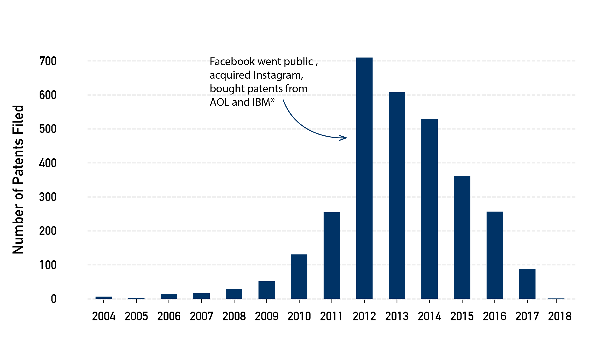
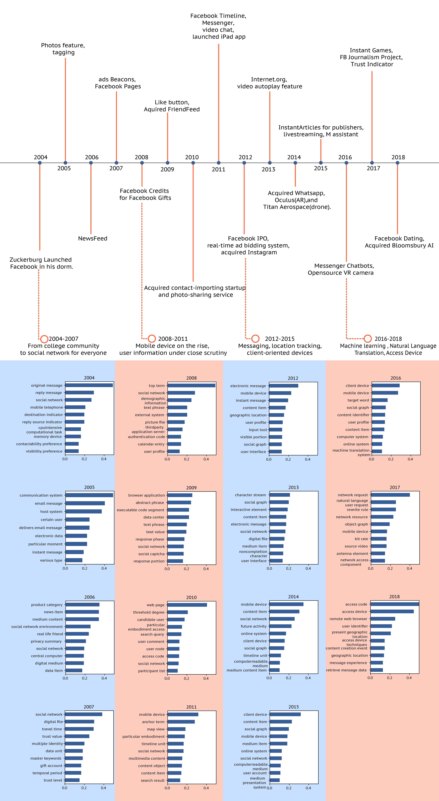
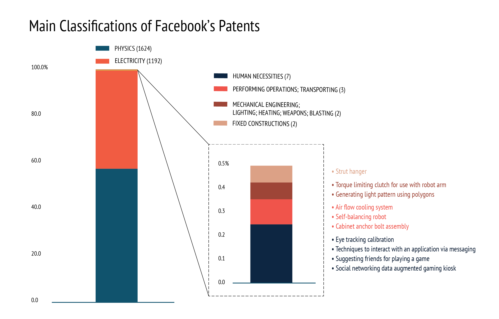

Technology
BY Christina Zhang
Published August 7, 2018
Patents are the new gold for the tech industry, thus an invisible battlefield among the tech giants such as Amazon, Facebook,and Google. However, patents are usually in the shadow and neglected by the public because few people have the interest and time to go over all the patent files full of jargons and sci-fi-type-of-vocabularies. I believe that patents can say a lot about a company, especially its shifting business priorities over time.
I got my data from two sources, justia.com and Google Patents, and built a dataset of 3059 Facebook Patents filed from 2001 to 2018. All the year/date are file dates, instead of grant date.
I got my data from two sources, justia.com and Google Patents, and built a dataset of 3059 Facebook Patents filed from 2001 to 2018. All the year/date are file dates, instead of grant date. I approached this dataset with two analysis:
Number of Patents
Patent quantity surged along with aggresive acquisition and rapid growth
NOTE: Although Facebook bought over 1000 patents from AOL and IBM in 2012, the quantity are spread out over the years since these patents have differnet file dates.
SOURCE: Google Patents
Keyphrase Analysis of Patent Titles and Abstracts
Based on a tf-idf (term frequency-inverse document frequency) analysis, I got to see the top 10 keyphrase in Facebook's patents by each year.
Facebook Timeline and Keyphrase Analysis
SOURCE: Google Patents
Patent Classifications Breakdown
Facebook patents are classified differently under different system. Based on the Cooperative Patent Classification (CPC) system, each patent has a classification combination of letters and number, each with different meaning. The first uppercase letter is the main catagory, and the letter number combinations after is the sub catagory, which getting more detailed with the addition of another letter or number combination. The classification analysis conducted in this project is focused on main class and the first sub-catagory (the second most general classification). Among all 3059 patents filed/owned by Facebook in this dataset, there are 1624 Physics and 1192 Electricity patents.
Main Classifications
Physics and Electricity patents dominate, but there's more.
SOURCE: Google Patents
Facebook's Hidden Gems in R&D
A sneak peak into Facebook patent sub catagories shows big ambition of Facebook disrupting different industries. Besides filing large number of patents in electric communications techniques and computing/calculating, which are the building blocks of its main social media platform, it tries to get its hand dirty in many other unexpected industries. From power generation, musical instruments, to signalling and optics.
Here's what Facebook is doing in the name of musical instruments:
Go back to my Homepage